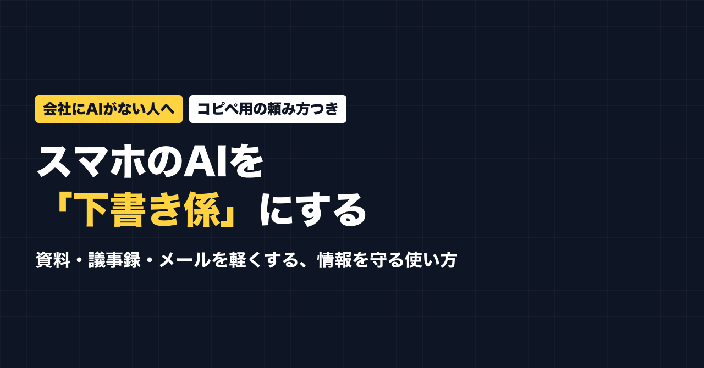
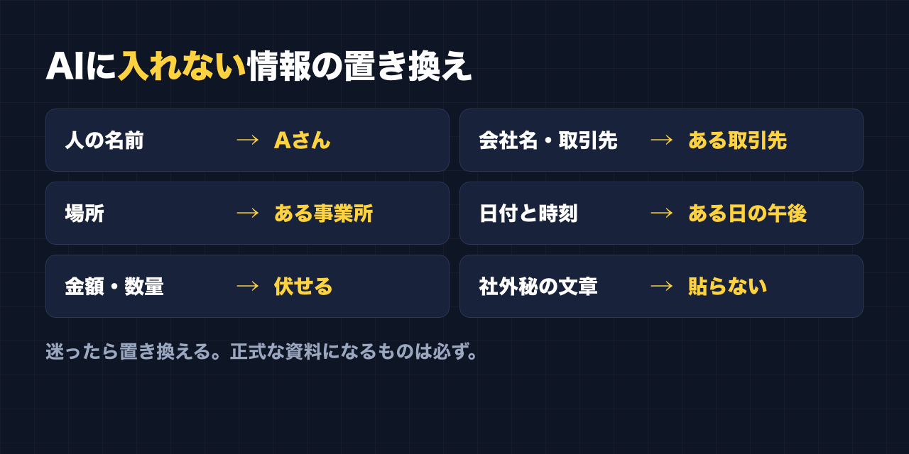
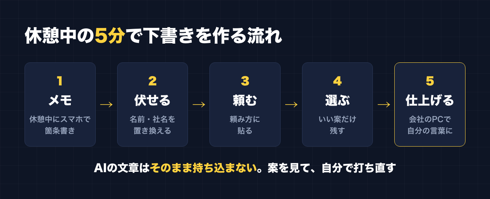

1. タイトルをコピーして、note のタイトル欄に貼る
2. 「本文1をコピー」から順にコピーし、note の本文に貼る
3. 青いラベルの位置に、images フォルダの同じ名前の画像を入れる（本文には貼られません）
※ 見出しが普通の文字になった場合は、その行を選んで「大見出し」を設定してください

うちの会社には、AIが入っていません。
社内のパソコンでは使えないし、使っていいという話も出ていない。
それでも、資料の見出しを考えるのも、議事録をまとめるのも、メールの言い回しに悩むのも、毎日のことです。
だから私は、自分のスマホのAIを「下書き係」にしています。
AIに仕事を丸ごと任せているわけではありません。
案を出してもらって、最後は自分で仕上げる。
白紙から考えるより、ずっと早く最初の形ができます。
この記事は、同じように「会社にはAIがないけど、少しでも仕事を軽くしたい」という会社員に向けて、私が実際にやっている使い方をまとめたものです。
この記事で手に入るもの
- 会社の情報を守りながらAIに頼むための「入れない情報」のルール
- 実名や社名を伏せるときの置き換え表
- そのままコピーして使える、用途別の頼み方（5種類）
- 資料の見出し・構成案
- デザインの案
- ミスが起きたときの聞き取り記録の要約
- 議事録のまとめ
- メールの文面
- 休憩中の5分で下書きを作って、会社のパソコンで仕上げる流れ
- やりがちな失敗と、その避け方
こんな人に向いています
- 会社でAIが導入されていない、または使い方が決まっていない
- 資料・議事録・メールに毎日時間を取られている
- 情報漏れが怖くて、AIに何をどこまで入れていいか分からない
向いていない人
- 会社の規程で、業務の情報を社外のサービスに入れることがはっきり禁止されている人
→ その場合は会社のルールが最優先です。この記事の使い方でも、規程に反するならやらないでください
- AIに丸ごと作ってもらって、そのまま提出したい人
→ この記事は「案を出してもらって自分で仕上げる」使い方です
――――ここから有料――――
1. いちばん大事な考え方：AIは「下書き係」
最初に、私がAIとの付き合い方で決めていることを書きます。
AIに完成品は作らせない。案を出させて、自分で仕上げる。
理由は3つあります。
1. 会社の事情や、相手との関係は、AIには分からない
2. AIはもっともらしい間違いを書くことがある
3. 提出するのは自分。責任も自分にある
なので、AIに頼むのは「白紙を埋める最初の一歩」です。
見出しの案を5つ出してもらって、その中から選んで直す。
要約を出してもらって、事実と違うところを消す。
この「選んで、直す」だけなら、白紙から考えるよりずっと早く終わります。
2. 入れない情報のルール
会社にAIがない人がいちばん気をつけるべきなのは、ここです。
スマホのAIに入れた内容は、会社の外のサービスに送られます。
だから、会社の外に出したら困る情報は、最初から入れません。
入れないもの
- 人の名前（社員・お客さん・取引先）
- 会社名・部署名・取引先名
- 住所・場所が特定できる情報
- 具体的な日付と時刻（必要なら「ある日の午前」くらいに）
- 金額・数量・契約の中身
- 社外秘・社内限定と書かれている資料の文章そのもの
- お客さんの個人情報（電話番号・メールアドレスなど）
置き換え表

- 山田さん（社員） → Aさん
- 取引先の○○株式会社 → ある取引先
- ○○営業所 → ある事業所
- 9月28日 14時 → ある日の午後
- 見積額 128万円 → 見積の金額（伏せる）
- 案件名 → ある案件
私自身、自分用のメモ程度なら気にせず入れてしまうこともあります。
でも、正式な会社の資料になるものは、必ず置き換えてから頼んでいます。
迷ったら置き換える。これだけ覚えておけば大きな事故は防げます。
入れる前の30秒チェック
AIに貼る前に、この5つだけ確認してください。
- ☐ 人の名前が残っていないか
- ☐ 会社名・取引先名が残っていないか
- ☐ 場所や日付から特定できないか
- ☐ 金額や数量が残っていないか
- ☐ 社外秘の文章をそのまま貼っていないか
3. 用途別の頼み方（コピペ用）
ここからは、私が実際に使っている5つの使い方です。
【 】の中を自分の内容に書き換えて、そのままAIに貼ってください。
① 資料の見出し・構成案
資料づくりで一番時間がかかるのは、中身より「どういう順番で並べるか」です。
ここをAIに出してもらいます。
あなたは、社内資料の構成を考えるのが得意なアシスタントです。
次の資料の「見出し」と「構成案」を3パターン出してください。
・資料の目的：【例：新人向けに作業手順を説明する】
・読む人：【例：入社1か月以内の新人】
・伝えたいこと：【箇条書きで3〜5個】
・分量：【例：A4で2枚】
それぞれのパターンについて、どんな人に向いているかも一言添えてください。出てきた3つを見比べて、いいところを組み合わせるのがコツです。
② デザインの案
最近のAIは、デザインの案もかなりいいものを出してくれます。
私はAIの案を見ながら、自分で資料を作っています。
次の資料の見た目の案を出してください。
・資料の種類：【例：朝礼で配る注意喚起の紙】
・読む人：【例：現場で働く人。忙しいので一瞬で分かるようにしたい】
・一番伝えたいこと：【一文で】
出してほしいもの：
1. レイアウトの案（どこに何を置くか）を2つ
2. 使う色の組み合わせと、その理由
3. 目に入りやすいタイトルの案を5つ③ ミスが起きたときの聞き取り記録の要約
人に教える仕事をしていると、ミスが起きたときに本人から話を聞いて、記録をまとめることがあります。
聞き取った内容は長くなりがちなので、要約をAIに手伝ってもらいます。
ここは特に、名前と場所を必ず伏せてください。
次の聞き取り記録を、報告書の下書き用に整理してください。
登場人物はすべて仮名に置き換えてあります。
【聞き取った内容をそのまま貼る（仮名・伏せ字にしたもの）】
整理のルール：
・「事実」と「本人の推測・気持ち」を分けて書く
・時系列に並べる
・いつ・どこで・誰が・何を・なぜ・どのように、で抜けているところがあれば「不明」と書く
・原因を決めつけない。考えられる要因は「可能性」として書く
・最後に、追加で確認したほうがいい質問を3つ挙げる「事実」と「推測」を分けてもらうだけで、報告書がぐっと書きやすくなります。
要約を読み返して、実際の話と違うところは必ず直してください。
④ 議事録のまとめ
次の会議メモを議事録にまとめてください。
参加者は仮名です。
【会議中に取ったメモを貼る】
まとめ方：
1. 決まったこと
2. 決まらなかったこと（次回に持ち越し）
3. やること（誰が・何を・いつまでに）
4. 次回の予定
メモにないことは書かないでください。分からない部分は「要確認」としてください。最後の一文「メモにないことは書かない」が大事です。
これがないと、AIがそれっぽいことを足してしまうことがあります。
⑤ メールの文面
次のメールの文面を3パターン作ってください。
・相手：【例：社外の取引先。付き合いは長いが目上】
・目的：【例：納期を1週間延ばしてほしいとお願いする】
・伝えたいこと：【箇条書き】
・トーン：【例：丁寧だけど、かしこまりすぎない】
・長さ：【例：スマホで読める長さ】
3パターンは、丁寧さの度合いを変えてください。相手・目的・トーン・長さの4つを渡すと、「いい感じにして」と頼むより、ずっと使える文面が出てきます。
4. 休憩中の5分で下書きを作る流れ

私は帰宅してから1〜2時間作業する、というやり方が続きませんでした。
今は、昼休みや休憩の合間の5分、10分でやっています。
仕事でも同じで、こんな流れにしています。
1. 休憩中にスマホでメモ：言いたいことを、箇条書きで雑に打つ
2. 名前や社名を置き換える：30秒チェックをする
3. AIに頼む：上の頼み方に貼る
4. 案を選ぶ：いいところだけメモに残す
5. 会社のパソコンで仕上げる：自分の言葉で書き直して完成
ポイントは、AIが出した文章を、そのまま会社のパソコンに持ち込まないことです。
案を見ながら、自分で打ち直す。そのほうが事実の間違いにも気づけますし、自分の言葉になります。
5. やりがちな失敗と、その避け方
- 置き換えを忘れて、実名を入れてしまう → 貼る前の30秒チェックを習慣にする
- AIの要約をそのまま信じる → 元のメモと見比べて、ない話が足されていないか確認する
- 長い資料を丸ごと貼る → 必要な部分だけ、伏せてから貼る
- 「いい感じにして」と頼む → 相手・目的・トーン・長さを渡す
- AIの文章がそのまま出ていて、自分らしくない → 最後の一文だけでも自分の言葉に変える
6. 会社で使う前に、確認しておくこと
最後に、大事なことを書いておきます。
- 就業規則や情報セキュリティの規程に、社外サービスの利用について決まりがないか確認する
- 決まりがあるなら、そちらを優先する
- 分からなければ、上司や担当部署に「業務でAIを使ってもいいか」を聞く
この記事の使い方は、あくまで「会社の情報を外に出さない範囲で、自分の下書きを早くする」ためのものです。
会社のルールを破ってまでやることではありません。
おわりに
会社にAIが入っていなくても、できることはあります。
大事なのは、
- 入れない情報を決めておくこと
- 丸投げしないで、案を出してもらって自分で仕上げること
の2つだけです。
まずは明日、メールを1通だけ、⑤の頼み方で作ってみてください。
公式LINEでは、発信や副業に使えるプロンプトを配っています。「特典」と送ると、LINE限定のプロンプト5本が届きます。
https://lin.ee/RzyA13P
自分の強みを整理して、SNSの投稿の下書きまで作れるツール「副業ドラフト」も作っています。Threads の下書き3本までは無料で試せます。
https://note-threadssf.onrender.com